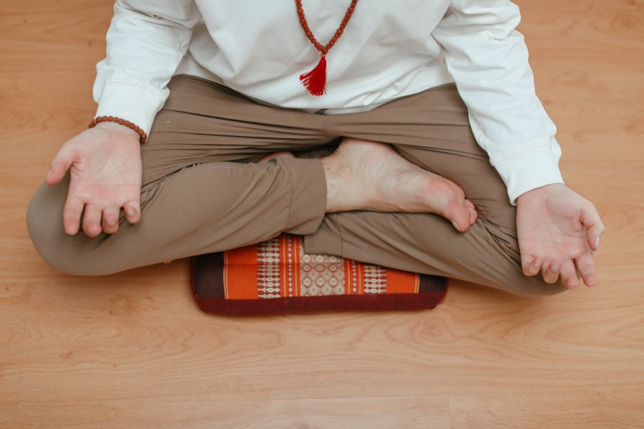

Twenty minutes a day does not sound like much until you have to explain why you could not manage two. I spent years starting a meditation practice and losing it again, sometimes inside a week, once inside three days. What finally changed was not a longer retreat or a better teacher. It was how small I was willing to make the thing.
I lived at a meditation retreat center for several years before I came back to what most people call normal life, so it surprises people when I admit I struggled with this. Sitting for hours a day inside a schedule with a bell telling you when to start and stop is nothing like sitting alone in your own kitchen at six in the morning with nothing external holding you to it. I had to learn how to do this on my own terms, the same as everyone else.
Back when I was still working the job that eventually broke me, I tried meditation the way I tried everything else, all at once. Twenty minutes twice a day, no exceptions. It lasted until ordinary life got busy again, and within six months the twice a day practice had trickled down to no practice at all. What actually held together came years later and looked nothing like that.
The mistake I kept making was treating meditation like something with a finish line, a skill I would eventually master and then be done learning. It is closer to flossing than to a course you complete. There is no version of this where you arrive and stop needing to do it again tomorrow.
I also did not really know why I was doing it. I could tell you exactly why I flossed every day, because I did not want gingivitis and I liked how it made my teeth feel. I could tell you exactly why I exercised, because I did not enjoy being anxious. I could not tell you the equivalent reason for meditation, and that gap turned out to matter more than I expected.
What follows is what actually got me from someone who meditated for a week here and there to someone who has done it most mornings for years, including the parts I would rather not admit, like how long it took and how often I quit before it worked.
Why I Kept Quitting Before It Stuck
Two things were working against me every single time, and neither of them had anything to do with willpower.
1. I was trying to do it the right way, not any way.
I do not believe there is a right way to sit. The actual goal is to give your mind and body a break from the constant input of the day, nothing more complicated than that. If you have to arrange a cushion, a candle, and forty minutes of silence before you are allowed to start, you will find reasons to skip it, and that is exactly the opposite of what you want. I spent years assuming there was a correct posture and a correct duration waiting for me to discover them, and every day I failed to meet that standard felt like a small failure instead of a normal Tuesday.
2. I had no real reason to keep going.
Knowing meditation was supposed to help in some general way was never enough to get me out of bed for it. The reason that finally stuck was specific, tied directly to the exhaustion that eventually pushed me out of the job I was in and into rebuilding my life around habits I could actually keep. Once I knew what I was meditating for, the question stopped being whether I felt like it that day.
The Two Minute Rule
The version of this that finally worked came from a five step approach I found years ago, and it is still the one I hand to anyone who tells me they cannot get meditation to stick. Start absurdly small. All you are committing to is two minutes a day. Five is fine if you feel good about it, but two is the actual commitment.
Pick a trigger, not a time
Do not aim for an exact hour of the day. Aim for a trigger, something already built into your routine, like the moment right after you brush your teeth. Having a fixed point in the day to hang the practice on gives it a kind of weight that an open ended intention never does.
Any quiet spot will do
The best spot is early in your home, before anyone else is awake, but it genuinely does not matter where you sit as long as you can go a few minutes without being interrupted.

- The floor of your bedroom before the house wakes up
- A park bench or a stretch of beach
- A crowded train on the way home from work
Sit however keeps you still
Do not fuss over how you sit, what you wear, or what you sit on. Sitting cross legged is not required. Sitting grounds you and keeps your spine straight and your shoulders back without forcing them there, but if the floor is uncomfortable, a chair or a couch works exactly as well.
Follow the breath and count to ten
Follow your breath in through your nose, into your throat, down into your lungs and your belly. Eyes open with a soft focus on the ground, or closed if that is easier. Follow the breath back out the same way. If it helps, count each inhale and exhale, one in, two out, three in, four out, up to ten, then start over. Repeat for however many minutes you have committed to. It becomes a regular habit within days, not months.
What My Journal Actually Showed Me
I have kept a paper journal of my habits for decades now, and the meditation pages taught me something the five steps alone never could.
The five minute months
I did not sit for twenty minutes from day one. The first month I sat for five. The second month I let it stretch to ten, then fifteen, then twenty, adding time only once the shorter version had already become automatic. Waiting to increase the length until the habit itself was solid meant I was never negotiating with myself about duration and consistency on the same day.
Skipping a day is not the same as quitting
My journal shows plenty of gaps. Looking back across the pages, I meditate something close to nine days out of ten, not every single one. For a long stretch I treated a missed day as proof the habit had failed, the same way I used to treat a missed day of anything else, and that thinking is what actually ended the habit, not the missed day itself. A missed day is not proof the habit failed. Once I stopped kicking myself for the gap and just picked it back up the next morning, the gaps stopped turning into weeks.
When It Stopped Feeling Like Discipline
About two weeks in, on an ordinary weekday, I had a small accident that told me something had already changed before I noticed it consciously.
The morning I noticed something had shifted
I was getting out the door, running a little late, and I knocked a full thermos of hot coffee across my hand and down the front of my shirt. It was hot enough to burn. I stood there for a second processing what had happened, and instead of getting annoyed I started laughing at myself. That was the whole reaction. A coworker asked later if something was different about me, said I seemed calmer and more at peace than usual. I had been sitting for five minutes a day for about two weeks at that point, and it had not occurred to me that anything measurable could come from something that small that fast.
It gets easier the way any skill gets easier
The first few times you try something physical, surfing or skiing, it is genuinely difficult, and then at some point there is an inflection point where the same activity starts to feel enjoyable instead of effortful, and you keep improving from there. Meditation works the same way. It is called a practice for a reason. Nobody expects to be good at a new sport in the first week, and there is no reason to expect instant ease from sitting still with your own mind either. The version of me who quit early was judging the first attempt like it should already feel like the hundredth one.
Questions I Get Asked About Starting
How long before I feel anything?
Some of it is immediate. You usually stand up a little calmer than you sat down, even after a rough five minutes. But the changes that actually last take longer to show and often go unnoticed until someone else points them out. My own mind quieted gradually, not all at once, and it took a few months before I noticed I was pausing before reacting to things that used to set me off immediately, sleeping longer stretches, and generally feeling steadier. Focus improves, stress drops, and sleep tends to get better too, but none of that shows up as a single dramatic before and after. It shows up as a pattern you can only really see by looking backward.
What if I don't have a good reason to keep going?
Try mapping the benefits to whatever you actually care about instead of some general idea of wellness. If your real goal is a calmer household or a steadier temper at work, rate yourself honestly on a scale of one to ten right now. How reactive am I with the people I live with? How many good ideas do I have in an average week? How much do I trust my own gut? Write the numbers down, meditate for a few months, then rescore yourself. Watching your own numbers move is a far better motivator than any general claim about what meditation is supposed to do for you.
What if sitting still just doesn't work for me?
Then it might not be the right entry point for you yet, and that is fine. The actual goal underneath meditation is a quiet mind, and sitting still is only one way to reach that. If it is not working, try one of these instead until you find the one that gives you a taste of the same stillness.
- Sound, through a sound bath or a similar listening practice
- Breathwork, structured breathing sessions done with guidance
- Qigong, or slow, deliberate movement practice
- Walking in nature without a phone or a destination
- Creative work, anything that pulls you fully into a flow state
Once you know what that stillness actually feels like, meditation itself tends to get easier, because you already recognize what you are aiming for instead of guessing at it blind.
Do I need a teacher or an app?
Not to start. But if you already want to keep going and just need accountability, working with a teacher can help the same way lessons help with tennis or golf. I would treat any app, teacher, or guided practice as a trial. Try it for a few weeks the way you would test anything else, and keep going until you land on one that actually makes you want to come back tomorrow.
Remembering that everything ends is supposed to be a heavy thought, but it is the fastest way I know to stop pretending you have something to lose by starting small. I think about that more than I think about any technique, because it turns two minutes of sitting still into more than enough reason to begin. You do not need the perfect setup or the perfect explanation. You need the two minutes, and then tomorrow's two minutes, and that is the whole practice.